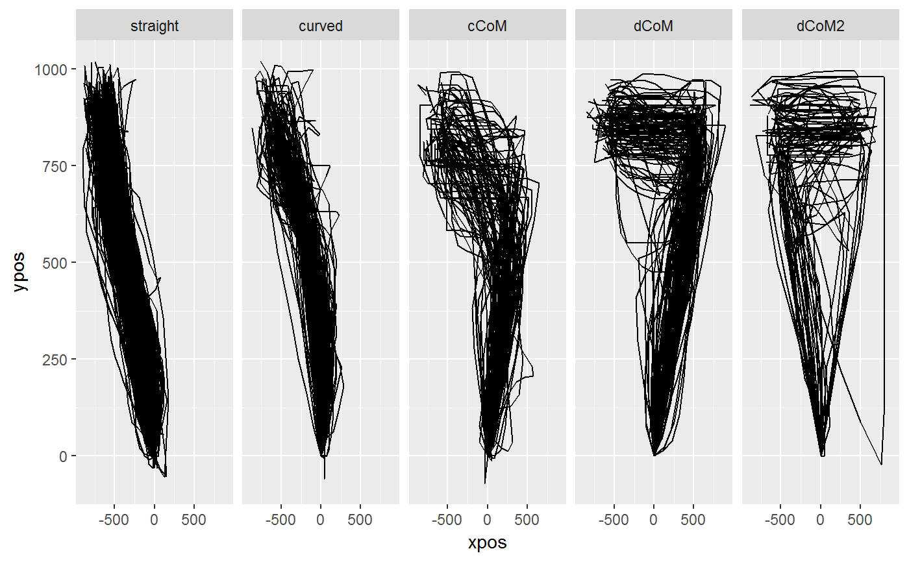
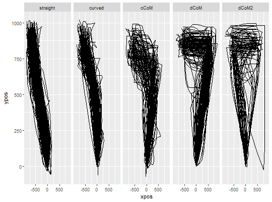

mt_map maps trajectories onto a predefined set of prototype
trajectories. It first computes distances between the trajectories and each
of the supplied trajectory types and then assigns each trajectory to the
prototype that produced the smallest distance.
mt_map(data, use = "sp_trajectories", save_as = "prototyping", dimensions = c("xpos", "ypos"), prototypes = mousetrap::mt_prototypes, weights = rep(1, length(dimensions)), pointwise = TRUE, na_rm = FALSE, minkowski_p = 2)
| data | a mousetrap data object created using one of the mt_import
functions (see mt_example for details). Alternatively, a trajectory
array can be provided directly (in this case |
|---|---|
| use | a character string specifying which trajectory data should be used. |
| save_as | a character string specifying where the resulting data should be stored. |
| dimensions | a character vector specifying which trajectory variables should be used. Can be of length 2 or 3 for two-dimensional or three-dimensional trajectories respectively. |
| prototypes | a trajectory array containing the prototypes the trajectories are mapped to. As a starting point, the trajectories stored in mt_prototypes can be used. See Details and Examples for selecting prototypes and creating new ones. |
| weights | numeric vector specifying the relative importance of the
variables specified in |
| pointwise | boolean specifying the way dissimilarity between the
trajectories is measured (see Details). If |
| na_rm | logical specifying whether trajectory points containing NAs should be removed. Removal is done column-wise. That is, if any trajectory has a missing value at, e.g., the 10th recorded position, the 10th position is removed for all trajectories. This is necessary to compute distance between trajectories. |
| minkowski_p | an integer specifying the distance metric.
|
A mousetrap data object (see mt_example) with an additional
data.frame (by default called prototyping) that contains the
best fitting prototype for each trajectory (the number of the prototype is
specified under prototype, the label of the prototype under
prototype_label) and the distance of the trajectory to the best
fitting prototype (min_dist). If a trajectory array was provided
directly as data, only the data.frame containing the results will be
returned.
Mouse trajectories often occur in distinct, qualitative types (see Wulff,
Haslbeck, Schulte-Mecklenbeck, 2017; Haslbeck, Wulff, Kieslich, Henninger, &
Schulte-Mecklenbeck, 2017). Common trajectory types are linear trajectories,
mildly and strongly curved trajctories, and single and multiple
change-of-mind trials. mt_map allows to map trajectories to a
predefined set of trajectory types.
First, mt_map adjusts prototypes to match the coordinate system of the
trajectories specified by use. Next, mt_map computes the
distances between each trajectory and each of the supplied prototypes (see
mt_distmat) and then assigns each trajectory to the closest prototype
(i.e., the prototype that produced the smallest distance).
Mapping trajectories to prototypes requires that the endpoints of all trajectories (and added prototypes) share the same direction, i.e., that all trajectories end in the top-left corner of the coordinate system (mt_remap_symmetric or mt_align can be used to achieve this). Furthermore, it is recommended to use spatialized trajectories (see mt_spatialize; Haslbeck, Wulff, Kieslich, Henninger, & Schulte-Mecklenbeck, 2017).
Wulff, D. U., Haslbeck, J. M. B., & Schulte-Mecklenbeck, M. (2017). Measuring the (dis-)continuous mind. Manuscript in preparation.
Haslbeck, J. M. B., Wulff, D. U., Kieslich, P. J., Henninger, F., & Schulte-Mecklenbeck, M. (2017). Advanced mouse- and hand-tracking analysis: Detecting and visualizing clusters in movement trajectories. Manuscript in preparation.
# Spatialize trajectories KH2017 <- mt_spatialize(KH2017) # Map trajectories onto standard prototype set KH2017 <- mt_map(KH2017, use="sp_trajectories") # Plot prototypes mt_plot(mt_prototypes,facet_col="mt_id") + ggplot2::facet_grid(.~factor(mt_id,levels=unique(mt_id)))# Plot trajectories per assigned prototype mt_plot(KH2017,use="sp_trajectories", use2="prototyping",facet_col="prototype_label")# Map trajectories onto reduced prototype set KH2017 <- mt_map(KH2017, use="sp_trajectories", prototypes=mt_prototypes[c("straight","curved","cCoM"),,], save_as="prototyping_red") # Map trajectories onto extended prototype set # Add additional prototypes mt_prototypes_ext <- mt_add_trajectory(mt_prototypes, xpos = c(0,1,-1,1,-1), ypos = c(0,1.5,1.5,1.5,1.5), id = "dCoM3" ) mt_prototypes_ext <- mt_add_trajectory(mt_prototypes_ext, xpos = c(0,0,-1), ypos = c(0,1.5,1.5), id = "neutral" ) # Map trajectories KH2017 <- mt_map(KH2017, use="sp_trajectories", prototypes=mt_prototypes_ext, save_as="prototyping_ext")